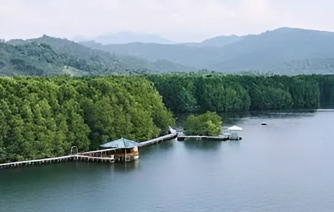
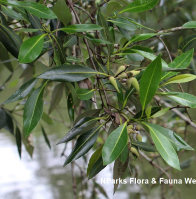

Hutan Mangrove Petengoran, yang kini menjadi ekowisata populer
di Lampung, memiliki sejarah yang menarik. Dahulu, kawasan ini
merupakan area tambak yang terbengkalai. Kondisi ini memicu
tingginya kasus malaria di Desa Gebang pada tahun 2011.
Tergerak oleh situasi tersebut, sekelompok warga bersama LSM
Mitra Bentala memulai upaya pelestarian hutan mangrove di
tahun 2010. Upaya ini didasari oleh beberapa alasan, yaitu:
Menurunkan angka kasus malaria. Hutan mangrove diketahui
efektif dalam mengendalikan nyamuk Anopheles, pembawa
penyakit malaria. Mencegah abrasi pantai. Akar pohon mangrove
yang kuat membantu menahan erosi tanah dan garis pantai.
Meningkatkan ekonomi masyarakat. Hutan mangrove dapat
dikembangkan sebagai objek wisata dan sumber penghasilan
bagi masyarakat sekitar. Pada tahun 2016, Hutan Mangrove
Petengoran resmi menjadi ekowisata yang dikelola oleh Badan
Usaha Milik Desa (BUMDes) Makmur Jaya. Sejak saat itu,
Hutan Mangrove Petengoran terus berkembang menjadi salah
satu destinasi wisata alam yang populer di Lampung.
Tentang Kami
Sejarah Singkat Hutan Mangrove Petengoran:
Dari Tambak Terlantar Menjadi Ekowisata Populer

Jenis - Jenis Mangrove Yang Terdapat Pada Kawasan Mangrove Petengoran

api - api hitam
(Avicennia alba)

waru
(Hibiscus tiliaceus)

bakau minyak
(Rhizophora apiculata)

bakau kurap
(Rhizophora mucronata)

bakau kecil
(Rhizophora stylosa)